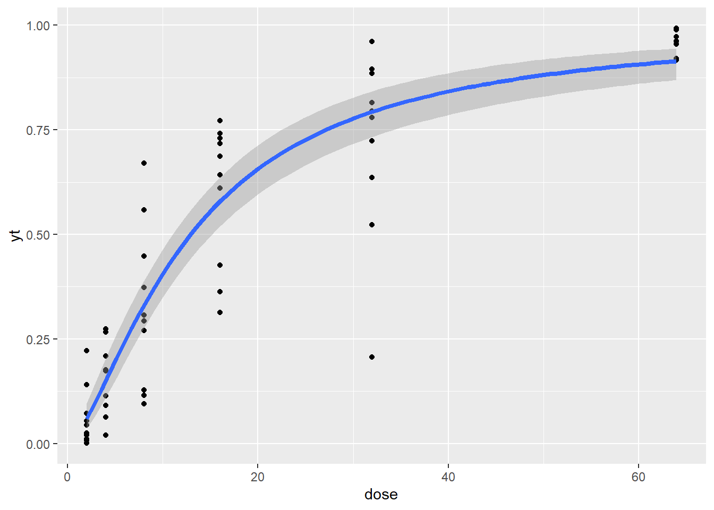
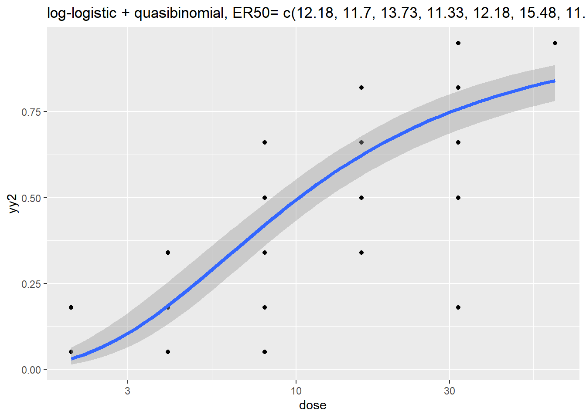
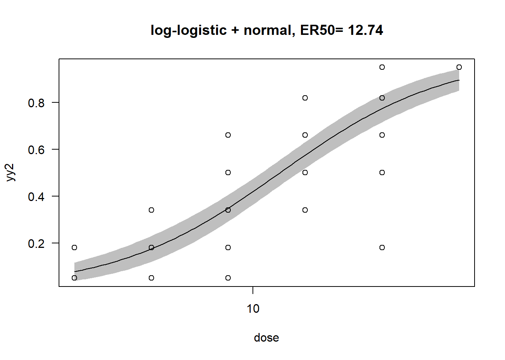
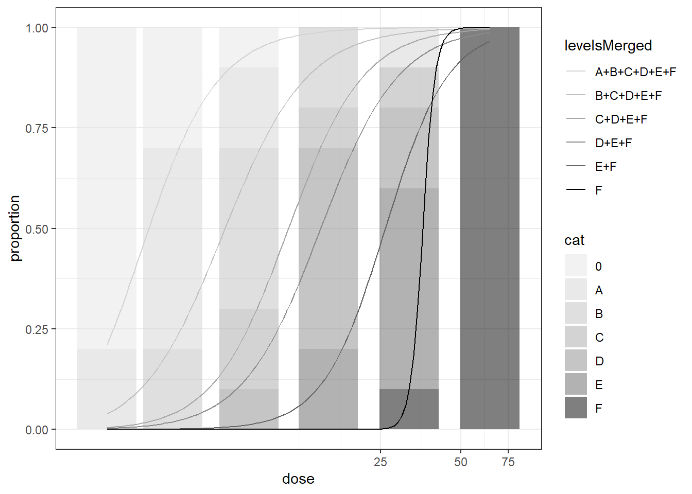
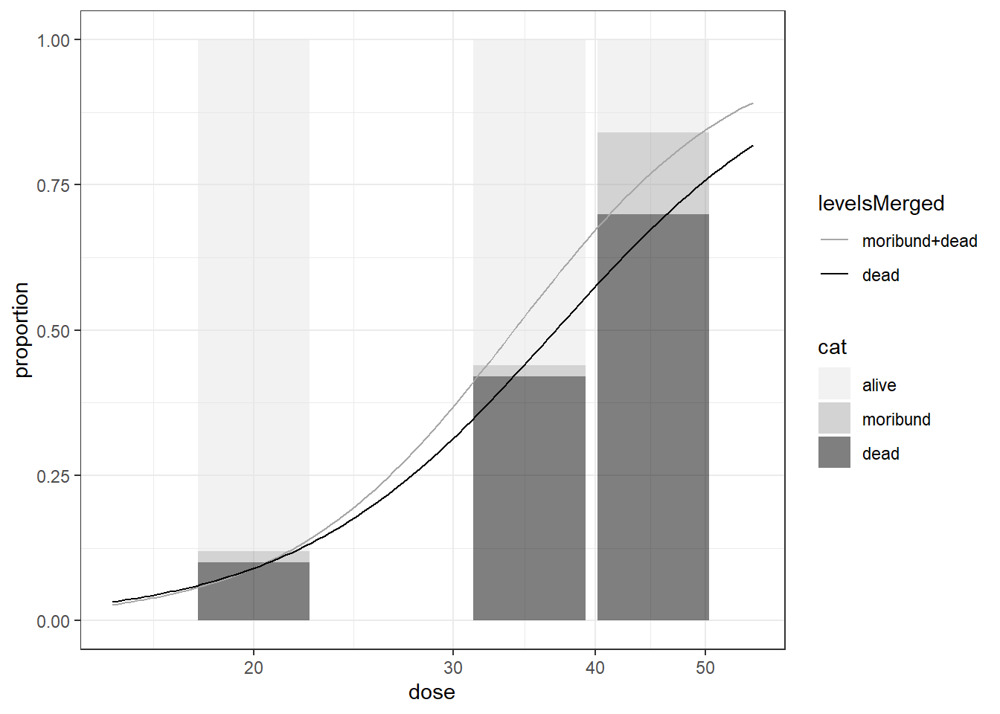

Code
pnorm(-2.5+1*log(c(2L, 4L, 8L,16L, 32L, 64L)))
#> [1] 0.03539262 0.13270274 0.33703877 0.60741531 0.83291183 0.95143032Zhenglei Gao
January 10, 2025
GLMcat is an R package that encompasses lots of models specified in a similar way: (ratio, cdf, design: parallel or complete).
ratio can be cumulative, sequential, or adjacent for ordinal data, reference for nominal data. Logistic, normal, Cauchy, Student, Gompertz and Gumbel are the commonly used link functions or CDF. Note that Gumbel cdf is the symmetric of the Gompertz cdf.
For parallel design, the effects of the covariates are assumed to be constant across the response categories, whereas for complete design, the covariates effects are different across different response categories. The linear predictios are \(\eta_j=\alpha_j+x'\delta_j\) and \(\eta_j=\alpha_j+x'\delta\) for \(j\) in \((1,...,J-1)\)
There are several type of models for categorical data:
The data was generated by Changjian using SAS Probnorm with Vx=0.25 and Vr=0.15, a=-2.5, b=1.0, ER50=12.18. Model: probit(y) = a + b*logdose + ri;
dattab_new <- read.table(textConnection("Obs rep dose yt y0
1 1 2 0.02021 0
2 2 2 0.02491 0
3 3 2 0.00760 0
4 5 2 0.04466 0
5 6 2 0.00037 0
6 8 2 0.05386 0
7 9 2 0.07205 0
8 10 2 0.01125 0
9 1 4 0.02011 0
10 7 4 0.09058 0
11 8 4 0.06255 0
12 10 8 0.09431 0
13 4 2 0.14060 A
14 7 2 0.22223 A
15 2 4 0.20943 A
16 3 4 0.20959 A
17 4 4 0.17305 A
18 9 4 0.11405 A
19 10 4 0.17668 A
20 1 8 0.12756 A
21 6 8 0.11478 A
22 6 32 0.20602 A
23 5 4 0.26650 B
24 6 4 0.27344 B
25 3 8 0.27021 B
26 5 8 0.30662 B
27 8 8 0.29319 B
28 9 8 0.37300 B
29 6 16 0.36224 B
30 9 16 0.31316 B
31 2 8 0.55845 C
32 4 8 0.44811 C
33 3 16 0.42677 C
34 3 32 0.52315 C
35 7 8 0.67080 D
36 2 16 0.71776 D
37 4 16 0.73038 D
38 5 16 0.64232 D
39 7 16 0.68720 D
40 8 16 0.61088 D
41 5 32 0.72342 D
42 8 32 0.63594 D
43 1 16 0.77171 E
44 10 16 0.74087 E
45 2 32 0.79477 E
46 4 32 0.88546 E
47 7 32 0.78002 E
48 9 32 0.81456 E
49 10 32 0.89465 E
50 1 32 0.96129 F
51 1 64 0.96127 F
52 2 64 0.91687 F
53 3 64 0.97204 F
54 4 64 0.99268 F
55 5 64 0.98935 F
56 6 64 0.96263 F
57 7 64 0.95435 F
58 8 64 0.92081 F
59 9 64 0.91776 F
60 10 64 0.99104 F"),header = TRUE)dattab_new <- dattab_new %>% mutate(yy = as.numeric(plyr::mapvalues(y0,from = c("0","A","B","C","D","E","F"),to = c(0,10,30,50,70,90,100)))/100) %>% mutate(yy2 = as.numeric(plyr::mapvalues(y0,from = c("0","A","B","C","D","E","F"),to = c(0.05,0.18,0.34,0.50,0.66,0.82,0.95))))
ftable(xtabs(~ y0 + dose, data = dattab_new)) ##%>% gt::gt() ## as.data.frame(.) %>% knitr::kable(.,digits = 3)#> dose 2 4 8 16 32 64
#> y0
#> 0 8 3 1 0 0 0
#> A 2 5 2 0 1 0
#> B 0 2 4 2 0 0
#> C 0 0 2 1 1 0
#> D 0 0 1 5 2 0
#> E 0 0 0 2 5 0
#> F 0 0 0 0 1 10| y0 | n | meany | meanyy2 |
|---|---|---|---|
| 0 | 12 | 0.042 | 0.05 |
| A | 10 | 0.169 | 0.18 |
| B | 8 | 0.307 | 0.34 |
| C | 4 | 0.489 | 0.50 |
| D | 8 | 0.677 | 0.66 |
| E | 7 | 0.812 | 0.82 |
| F | 11 | 0.958 | 0.95 |
| dose | n | meany | meanyy |
|---|---|---|---|
| 2 | 10 | 0.060 | 0.02 |
| 4 | 10 | 0.160 | 0.11 |
| 8 | 10 | 0.326 | 0.31 |
| 16 | 10 | 0.600 | 0.64 |
| 32 | 10 | 0.722 | 0.75 |
| 64 | 10 | 0.958 | 1.00 |

| y0 | dose | 2 | 4 | 8 | 16 | 32 | 64 |
|---|---|---|---|---|---|---|---|
| 0 | 8 | 3 | 1 | 0 | 0 | 0 | |
| A | 2 | 5 | 2 | 0 | 1 | 0 | |
| B | 0 | 2 | 4 | 2 | 0 | 0 | |
| C | 0 | 0 | 2 | 1 | 1 | 0 | |
| D | 0 | 0 | 1 | 5 | 2 | 0 | |
| E | 0 | 0 | 0 | 2 | 5 | 0 | |
| F | 0 | 0 | 0 | 0 | 1 | 10 |
## fit ordered logit model and store results 'm'
dattab_new $y0 <- factor(dattab_new$y0, levels = c("0","A","B","C","D","E","F"),ordered = TRUE)
m <- MASS::polr(y0 ~ log(dose), data = dattab_new, Hess=TRUE)
summary(m)
#> Call:
#> MASS::polr(formula = y0 ~ log(dose), data = dattab_new, Hess = TRUE)
#>
#> Coefficients:
#> Value Std. Error t value
#> log(dose) 3.465 0.4876 7.106
#>
#> Intercepts:
#> Value Std. Error t value
#> 0|A 4.0061 0.8091 4.9513
#> A|B 6.3415 1.0283 6.1669
#> B|C 8.1921 1.2395 6.6092
#> C|D 9.1287 1.3489 6.7677
#> D|E 10.9709 1.5691 6.9917
#> E|F 12.9482 1.8234 7.1011
#>
#> Residual Deviance: 128.7906
#> AIC: 142.7906
ctable <- coef(summary(m))
## At ER50, the cumulative probability probability of the response being in a higher category is close to 1.
plogis(ctable[,1] + ctable[,2]*log(12.18))
#> log(dose) 0|A A|B B|C C|D D|E E|F
#> 0.9908438 0.9975973 0.9998653 0.9999875 0.9999963 0.9999997 1.0000000
## calculate and store p values
p <- pnorm(abs(ctable[, "t value"]), lower.tail = FALSE) * 2
## combined table
(ctable <- cbind(ctable, "p value" = p))
#> Value Std. Error t value p value
#> log(dose) 3.465155 0.4876298 7.106117 1.193530e-12
#> 0|A 4.006148 0.8091031 4.951344 7.370254e-07
#> A|B 6.341529 1.0283150 6.166913 6.963590e-10
#> B|C 8.192141 1.2395138 6.609156 3.865169e-11
#> C|D 9.128696 1.3488680 6.767672 1.308710e-11
#> D|E 10.970866 1.5691374 6.991654 2.716642e-12
#> E|F 12.948174 1.8234117 7.101070 1.237950e-12
(ci <- confint(m)) ## profiled CI
#> 2.5 % 97.5 %
#> 2.582836 4.504378
exp(cbind(coef(m),t(ci)))
#> 2.5 % 97.5 %
#> log(dose) 31.98141 13.23462 90.41212
## OR and CI
exp(cbind(OR = coef(m), ci))
#> OR ci
#> 2.5 % 31.98141 13.23462
#> 97.5 % 31.98141 90.41212
newdat <- data.frame(dose = unique(dattab_new$dose)) %>% mutate(logdose = log(dose))
(phat <- predict(object = m, newdat, type="p"))
#> 0 A B C D E
#> 1 8.326166e-01 0.1483000019 0.016035611 0.001850927 0.00100702 0.0001635762
#> 2 3.105443e-01 0.5126011687 0.144195119 0.019598385 0.01096824 0.0018025754
#> 3 3.918687e-02 0.2573055374 0.431914336 0.144078094 0.10487831 0.0194406374
#> 4 3.342916e-04 0.0031093320 0.018073161 0.031603441 0.20832988 0.4574198047
#> 5 3.679470e-03 0.0330795765 0.158639125 0.187148646 0.41376767 0.1694853156
#> 6 3.027903e-05 0.0002825179 0.001674417 0.003066947 0.02600507 0.1569497884
#> F
#> 1 2.628958e-05
#> 2 2.902582e-04
#> 3 3.196213e-03
#> 4 2.811301e-01
#> 5 3.420020e-02
#> 6 8.119910e-01
phat %>% knitr::kable(.,digits = 3)| 0 | A | B | C | D | E | F |
|---|---|---|---|---|---|---|
| 0.833 | 0.148 | 0.016 | 0.002 | 0.001 | 0.000 | 0.000 |
| 0.311 | 0.513 | 0.144 | 0.020 | 0.011 | 0.002 | 0.000 |
| 0.039 | 0.257 | 0.432 | 0.144 | 0.105 | 0.019 | 0.003 |
| 0.000 | 0.003 | 0.018 | 0.032 | 0.208 | 0.457 | 0.281 |
| 0.004 | 0.033 | 0.159 | 0.187 | 0.414 | 0.169 | 0.034 |
| 0.000 | 0.000 | 0.002 | 0.003 | 0.026 | 0.157 | 0.812 |
library(GLMcat)
dattab_new <- dattab_new %>% mutate(logdose = log(dose))
mod_ref_log_c <- glmcat(formula = y0 ~ logdose, ratio = "reference", cdf = "logistic", data = as.data.frame(dattab_new),ref="0",parallel = F)
summary(mod_ref_log_c)
#> y0 ~ logdose
#> ratio cdf nobs niter logLik
#> Model info: reference logistic 60 15 -61.33542
#> Estimate Std. Error z value Pr(>|z|)
#> (Intercept) A -2.907 1.309 -2.221 0.026323 *
#> (Intercept) B -5.398 1.835 -2.942 0.003260 **
#> (Intercept) C -9.347 3.019 -3.096 0.001958 **
#> (Intercept) D -10.923 3.065 -3.564 0.000366 ***
#> (Intercept) E -17.421 4.838 -3.600 0.000318 ***
#> (Intercept) F -118.572 109742.484 -0.001 0.999138
#> logdose A 2.179 0.993 2.194 0.028225 *
#> logdose B 3.415 1.177 2.901 0.003725 **
#> logdose C 4.803 1.504 3.194 0.001404 **
#> logdose D 5.633 1.499 3.758 0.000172 ***
#> logdose E 7.692 1.895 4.058 4.94e-05 ***
#> logdose F 36.404 31664.987 0.001 0.999083
#> ---
#> Signif. codes: 0 '***' 0.001 '**' 0.01 '*' 0.05 '.' 0.1 ' ' 1
(phat <- predict(object = mod_ref_log_c, newdat, type="prob"))
#> A B C D E
#> [1,] 1.904456e-01 3.716346e-02 1.873707e-03 6.891895e-04 4.324730e-06
#> [2,] 4.075170e-01 1.873256e-01 2.472185e-02 1.616443e-02 4.225492e-04
#> [3,] 3.188563e-01 3.452649e-01 1.192710e-01 1.386298e-01 1.509628e-02
#> [4,] 5.226961e-03 3.140645e-02 7.433584e-02 2.730262e-01 5.159543e-01
#> [5,] 7.795418e-02 1.988396e-01 1.797976e-01 3.714905e-01 1.685225e-01
#> [6,] 2.602306e-12 3.683274e-11 2.281981e-10 1.489911e-09 1.172908e-08
#> F 0
#> [1,] 2.238505e-41 7.698238e-01
#> [2,] 9.621081e-31 3.638486e-01
#> [3,] 1.512043e-20 6.288173e-02
#> [4,] 1.000000e-01 5.029071e-05
#> [5,] 7.425049e-11 3.395654e-03
#> [6,] 1.000000e+00 5.551115e-15
phat %>% knitr::kable(.,digits = 3)| A | B | C | D | E | F | 0 |
|---|---|---|---|---|---|---|
| 0.190 | 0.037 | 0.002 | 0.001 | 0.000 | 0.0 | 0.770 |
| 0.408 | 0.187 | 0.025 | 0.016 | 0.000 | 0.0 | 0.364 |
| 0.319 | 0.345 | 0.119 | 0.139 | 0.015 | 0.0 | 0.063 |
| 0.005 | 0.031 | 0.074 | 0.273 | 0.516 | 0.1 | 0.000 |
| 0.078 | 0.199 | 0.180 | 0.371 | 0.169 | 0.0 | 0.003 |
| 0.000 | 0.000 | 0.000 | 0.000 | 0.000 | 1.0 | 0.000 |
## (phat <- predict(object = mod_ref_log_c, newdat, type="linear.predictor"))
mod_cum_logis <- glmcat(formula = y0 ~ logdose, ratio = "cumulative", cdf = "logistic", data = as.data.frame(dattab_new),parallel = TRUE)
summary(mod_cum_logis)
#> y0 ~ logdose
#> ratio cdf nobs niter logLik
#> Model info: cumulative logistic 60 9 -64.3953
#> Estimate Std. Error z value Pr(>|z|)
#> (Intercept) 0 4.0061 0.8142 4.920 8.64e-07 ***
#> (Intercept) A 6.3415 1.0419 6.086 1.16e-09 ***
#> (Intercept) B 8.1920 1.2583 6.510 7.50e-11 ***
#> (Intercept) C 9.1286 1.3693 6.666 2.62e-11 ***
#> (Intercept) D 10.9707 1.6005 6.854 7.16e-12 ***
#> (Intercept) E 12.9479 1.8194 7.117 1.11e-12 ***
#> logdose -3.4651 0.4912 -7.054 1.74e-12 ***
#> ---
#> Signif. codes: 0 '***' 0.001 '**' 0.01 '*' 0.05 '.' 0.1 ' ' 1
(phat <- predict(object = mod_cum_logis, newdat, type="prob"))
#> 0 A B C D E
#> [1,] 8.326186e-01 0.1482975531 0.016035767 0.001851046 0.001007102 0.000163596
#> [2,] 3.105557e-01 0.5125923926 0.144191357 0.019598856 0.010968693 0.001802725
#> [3,] 3.919032e-02 0.2573138937 0.431903119 0.144076171 0.104878455 0.019441472
#> [4,] 3.343480e-04 0.0031097342 0.018074387 0.031605029 0.208331116 0.457408504
#> [5,] 3.679947e-03 0.0330824671 0.158642283 0.187148395 0.413758936 0.169485389
#> [6,] 3.028531e-05 0.0002825654 0.001674598 0.003067232 0.026006412 0.156948672
#> F
#> [1,] 2.629451e-05
#> [2,] 2.903015e-04
#> [3,] 3.196565e-03
#> [4,] 2.811369e-01
#> [5,] 3.420258e-02
#> [6,] 8.119902e-01
phat %>% knitr::kable(.,digits = 3)| 0 | A | B | C | D | E | F |
|---|---|---|---|---|---|---|
| 0.833 | 0.148 | 0.016 | 0.002 | 0.001 | 0.000 | 0.000 |
| 0.311 | 0.513 | 0.144 | 0.020 | 0.011 | 0.002 | 0.000 |
| 0.039 | 0.257 | 0.432 | 0.144 | 0.105 | 0.019 | 0.003 |
| 0.000 | 0.003 | 0.018 | 0.032 | 0.208 | 0.457 | 0.281 |
| 0.004 | 0.033 | 0.159 | 0.187 | 0.414 | 0.169 | 0.034 |
| 0.000 | 0.000 | 0.002 | 0.003 | 0.026 | 0.157 | 0.812 |
fit0 <- MASS::polr(y0 ~ 1,
data = dattab_new,
Hess= T)
fit0
#> Call:
#> MASS::polr(formula = y0 ~ 1, data = dattab_new, Hess = T)
#>
#> No coefficients
#>
#> Intercepts:
#> 0|A A|B B|C C|D D|E
#> -1.386294e+00 -5.465462e-01 -1.793225e-06 2.682586e-01 8.472940e-01
#> E|F
#> 1.493920e+00
#>
#> Residual Deviance: 228.003
#> AIC: 240.003
#source("https://github.com/rwnahhas/RMPH_Resources/raw/main/Functions_rmph.R")
ilogit <- function(x) exp(x)/(1+exp(x))
ilogit(fit0$zeta)
#> 0|A A|B B|C C|D D|E E|F
#> 0.2000001 0.3666661 0.4999996 0.5666653 0.6999992 0.8166659
sf <- function(y) {
c('Y>=1' = qlogis(mean(y >= 1)),
'Y>=2' = qlogis(mean(y >= 2)),
'Y>=3' = qlogis(mean(y >= 3)),
'Y>=4' = qlogis(mean(y >= 4)),
'Y>=5' = qlogis(mean(y >= 5)))
}
(s <- with(dattab_new, summary(as.numeric(y0) ~ factor(dose), fun=sf)))
#> Length Class Mode
#> 3 formula call
glm(I(as.numeric(y0) >= 2) ~ log(dose), family="binomial", data = dattab_new)
#>
#> Call: glm(formula = I(as.numeric(y0) >= 2) ~ log(dose), family = "binomial",
#> data = dattab_new)
#>
#> Coefficients:
#> (Intercept) log(dose)
#> -3.305 2.874
#>
#> Degrees of Freedom: 59 Total (i.e. Null); 58 Residual
#> Null Deviance: 60.05
#> Residual Deviance: 29.19 AIC: 33.19
glm(I(as.numeric(y0) >= 3) ~ log(dose), family="binomial", data = dattab_new)
#>
#> Call: glm(formula = I(as.numeric(y0) >= 3) ~ log(dose), family = "binomial",
#> data = dattab_new)
#>
#> Coefficients:
#> (Intercept) log(dose)
#> -5.089 2.726
#>
#> Degrees of Freedom: 59 Total (i.e. Null); 58 Residual
#> Null Deviance: 78.86
#> Residual Deviance: 33.83 AIC: 37.83
glm(I(as.numeric(y0) >= 4) ~ log(dose), family="binomial", data = dattab_new)
#>
#> Call: glm(formula = I(as.numeric(y0) >= 4) ~ log(dose), family = "binomial",
#> data = dattab_new)
#>
#> Coefficients:
#> (Intercept) log(dose)
#> -7.440 3.067
#>
#> Degrees of Freedom: 59 Total (i.e. Null); 58 Residual
#> Null Deviance: 83.18
#> Residual Deviance: 30.69 AIC: 34.69getEC50 <- function(mod){
if("glm" %in% class(mod)){
ec50 <- MASS::dose.p(mod,p=0.5)
se <- attr(ec50,"SE")
xmin <- as.numeric(ec50 - 1.96*se)
xmax <- as.numeric(ec50 + 1.96*se)
res <- data.frame(EC50=exp(as.numeric(ec50)),
lower=exp(xmin),upper=exp(xmax),se=se)
}else{
if("glmmPQL" %in% class(mod)){
res1 <- dose.p.glmmPQL(mod,cf=1:2,p=0.5)
se <- attr(res1,"SE")
res <- data.frame(EC50=exp(res1[1]),lower=exp(res1[1]-1.96*se),upper=exp(res1[1]+1.96*se),se=se)
}else{
res1 <- ED(mod,50,interval="delta")
res <- data.frame(EC50=res1[1,"Estimate"],lower=res1[1,"Lower"],upper=res1[1,"Upper"],se=res1[1,"Std. Error"])
}
}
return(res)
}
dose.p.glmmPQL <- function(obj,cf=1:2,p=0.5){
eta <- obj$family$linkfun(p)
b <- obj$coefficients$fixed[cf]
x.p <- (eta - b[1L])/b[2L]
names(x.p) <- paste("p = ", format(p), ":", sep = "")
pd <- -cbind(1, x.p)/b[2L]
SE <- sqrt(((pd %*% vcov(obj)[cf, cf]) * pd) %*% c(1, 1))
res <- structure(x.p, SE = SE, p = p)
class(res) <- "glm.dose"
res
}mod <- glm(yy2~log(dose),data = dattab_new,family = quasibinomial)
summary(mod)
#>
#> Call:
#> glm(formula = yy2 ~ log(dose), family = quasibinomial, data = dattab_new)
#>
#> Coefficients:
#> Estimate Std. Error t value Pr(>|t|)
#> (Intercept) -3.5064 0.3132 -11.19 4.02e-16 ***
#> log(dose) 1.3832 0.1171 11.81 < 2e-16 ***
#> ---
#> Signif. codes: 0 '***' 0.001 '**' 0.01 '*' 0.05 '.' 0.1 ' ' 1
#>
#> (Dispersion parameter for quasibinomial family taken to be 0.1163524)
#>
#> Null deviance: 31.8277 on 59 degrees of freedom
#> Residual deviance: 6.3595 on 58 degrees of freedom
#> AIC: NA
#>
#> Number of Fisher Scoring iterations: 5
ER50 <- exp(-coef(mod)[1]/coef(mod)[2])
ER50
#> (Intercept)
#> 12.617
getEC50(mod)
#> EC50 lower upper se
#> p = 0.5: 12.617 10.77038 14.78023 0.08073738
pred <- predict(mod,newdata = dattab_new,type = "response")
dattab_new$pred <- pred
dattab_new %>% group_by(y0) %>% summarise(n=n(),meany=mean(yt),meanyy2=mean(yy2),meanEst=mean(pred)) %>% knitr::kable(.,digits = 3)| y0 | n | meany | meanyy2 | meanEst |
|---|---|---|---|---|
| 0 | 12 | 0.042 | 0.05 | 0.120 |
| A | 10 | 0.169 | 0.18 | 0.247 |
| B | 8 | 0.307 | 0.34 | 0.361 |
| C | 4 | 0.489 | 0.50 | 0.515 |
| D | 8 | 0.677 | 0.66 | 0.603 |
| E | 7 | 0.812 | 0.82 | 0.726 |
| F | 11 | 0.958 | 0.95 | 0.893 |
## Consider Replicate effect
modr <- MASS::glmmPQL(yy2~ log(dose),random=~1|rep,family="quasibinomial",data=dattab_new)
ER50 <- exp(-coef(modr)[1]/coef(modr)[2])
exp(-modr$coefficients$fixed[1]/ modr$coefficients$fixed[2])
#> (Intercept)
#> 12.61695
summary(modr)
#> Linear mixed-effects model fit by maximum likelihood
#> Data: dattab_new
#> AIC BIC logLik
#> NA NA NA
#>
#> Random effects:
#> Formula: ~1 | rep
#> (Intercept) Residual
#> StdDev: 0.2256918 0.3155037
#>
#> Variance function:
#> Structure: fixed weights
#> Formula: ~invwt
#> Fixed effects: yy2 ~ log(dose)
#> Value Std.Error DF t-value p-value
#> (Intercept) -3.517527 0.3039553 49 -11.57251 0
#> log(dose) 1.387562 0.1103306 49 12.57640 0
#> Correlation:
#> (Intr)
#> log(dose) -0.907
#>
#> Standardized Within-Group Residuals:
#> Min Q1 Med Q3 Max
#> -3.9592347 -0.3047297 0.1382668 0.4944066 1.9353183
#>
#> Number of Observations: 60
#> Number of Groups: 10
getEC50(modr)
#> EC50 lower upper se
#> p = 0.5: 12.61695 10.56476 15.06777 0.09057011
pred <- predict(modr,newdata = dattab_new,type = "response")
dattab_new$predr <- pred
dattab_new %>% group_by(y0) %>% summarise(n=n(),meany=mean(yt),meanyy2=mean(yy2),meanEst=mean(pred),meanEstR=mean(predr)) %>% knitr::kable(.,digits = 3)| y0 | n | meany | meanyy2 | meanEst | meanEstR |
|---|---|---|---|---|---|
| 0 | 12 | 0.042 | 0.05 | 0.120 | 0.120 |
| A | 10 | 0.169 | 0.18 | 0.247 | 0.240 |
| B | 8 | 0.307 | 0.34 | 0.361 | 0.342 |
| C | 4 | 0.489 | 0.50 | 0.515 | 0.517 |
| D | 8 | 0.677 | 0.66 | 0.603 | 0.620 |
| E | 7 | 0.812 | 0.82 | 0.726 | 0.736 |
| F | 11 | 0.958 | 0.95 | 0.893 | 0.894 |
Note that glmer and glmmPQL (based on lme from the nlme pacakge) differs in terms of parameter estimation algorithm and nlme is not optimized for dealing with crossed random effects, which are associated with a sparse design matrix. See more in the book from Pinheiro & Bates.[^1]

library(drc)
mod_drc <- drm(yy2 ~ dose, data = dattab_new, fct = LL.2())
## mod_drc <- drm(yy2 ~ dose, data = dattab_new, fct = LL.2(),type = "binomial")
summary(mod_drc)
#>
#> Model fitted: Log-logistic (ED50 as parameter) with lower limit at 0 and upper limit at 1 (2 parms)
#>
#> Parameter estimates:
#>
#> Estimate Std. Error t-value p-value
#> b:(Intercept) -1.33865 0.13595 -9.8465 5.487e-14 ***
#> e:(Intercept) 12.74391 1.03919 12.2633 < 2.2e-16 ***
#> ---
#> Signif. codes: 0 '***' 0.001 '**' 0.01 '*' 0.05 '.' 0.1 ' ' 1
#>
#> Residual standard error:
#>
#> 0.1446638 (58 degrees of freedom)
ED(mod_drc, c(50), interval = "delta")
#>
#> Estimated effective doses
#>
#> Estimate Std. Error Lower Upper
#> e:1:50 12.7439 1.0392 10.6637 14.8241
plot(mod_drc, type = "all",main="log-logistic + normal, ER50= 12.74", broken = TRUE)
plot(mod_drc, broken = TRUE, type="confidence", add=TRUE)
library(drc)
library(bmd)
dat_ord <- dattab_new %>% group_by(y0,dose) %>% summarise(n=n()) %>% ungroup() %>% pivot_wider(names_from = y0,values_from = n)
dat_ord <- dat_ord %>% mutate(across(c(`0`,`A`,`B`,`C`,`D`,`E`,`F`),~ifelse(is.na(.),0,.))) %>% mutate(total=rowSums(across(c(`0`,`A`,`B`,`C`,`D`,`E`,`F`))))
mod_ord <- drmOrdinal(levels = unique(dattab_new$y0), weights="total",dose = "dose", data = dat_ord, fct = LL.2())
plot(mod_ord) # uses ggplot
library(GLMcat)
data("DisturbedDreams")
summary(DisturbedDreams)
#> Age Level
#> Min. : 6.00 Not.severe :100
#> 1st Qu.: 8.50 Severe.1 : 42
#> Median :10.50 Severe.2 : 41
#> Mean :10.96 Very.severe: 40
#> 3rd Qu.:12.50
#> Max. :14.50
head(DisturbedDreams)
#> Age Level
#> 1 6 Not.severe
#> 2 6 Not.severe
#> 3 6 Not.severe
#> 4 6 Not.severe
#> 5 6 Not.severe
#> 6 6 Not.severesummary(mod_ref_log_c)
#> Level ~ Age
#> ratio cdf nobs niter logLik
#> Model info: reference logistic 223 5 -277.1345
#> Estimate Std. Error z value Pr(>|z|)
#> (Intercept) Not.severe -2.45444 0.84559 -2.903 0.0037 **
#> (Intercept) Severe.1 -0.55464 0.89101 -0.622 0.5336
#> (Intercept) Severe.2 -1.12464 0.91651 -1.227 0.2198
#> Age Not.severe 0.30999 0.07804 3.972 7.13e-05 ***
#> Age Severe.1 0.05997 0.08582 0.699 0.4847
#> Age Severe.2 0.11228 0.08684 1.293 0.1960
#> ---
#> Signif. codes: 0 '***' 0.001 '**' 0.01 '*' 0.05 '.' 0.1 ' ' 1# Random observations
set.seed(13)
ind <- sample(x = 1:nrow(DisturbedDreams), size = 3)
# Probabilities
predict(mod_ref_log_c, newdata = DisturbedDreams[ind, ], type = "prob")
#> Not.severe Severe.1 Severe.2 Very.severe
#> [1,] 0.5392049 0.1583321 0.1721826 0.1302804
#> [2,] 0.1832207 0.2732519 0.2115046 0.3320229
#> [3,] 0.2996414 0.2391879 0.2110034 0.2501674
DisturbedDreams[ind, ]
#> Age Level
#> 216 12.5 Very.severe
#> 3 6.0 Not.severe
#> 192 8.5 Very.severe
limited information and pertaintially unequal intervals, which requires a clear understanding of its subtleties and complexities, and careful attentions when implementing regression modelling.
Proportional Odds Model and Continuation Ratio Model, are standard regression models looking at ordered categories and transitions between them
Proportional Odds Model: Coefficient (slopes) remains constant across all categories.
Continuation Ratio Model: Model cumulative odds ratios.
Adjacent Categories Model: useful when neighboring categories influence each other.
[^1] (Pinheiro & Bates, “Mixed-Effects Models in S and S-PLUS”, Springer, 2000, pp. 163. )